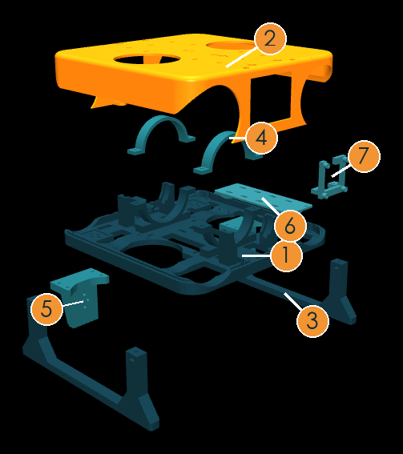
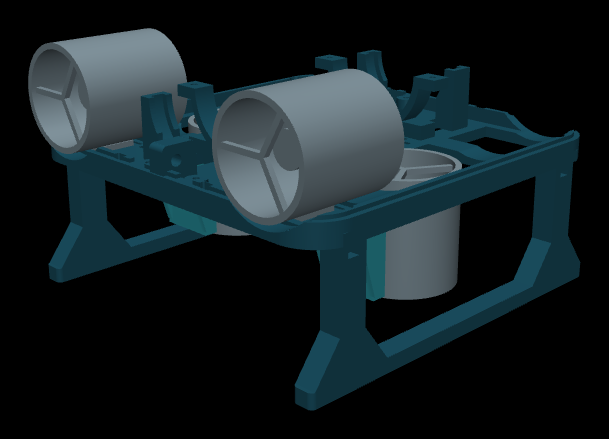
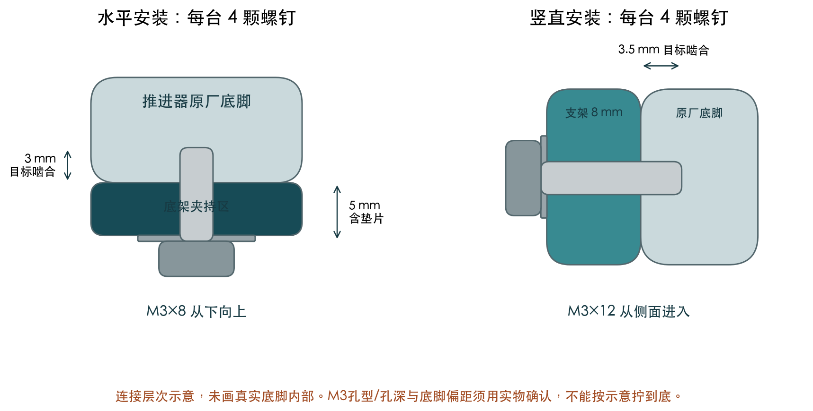
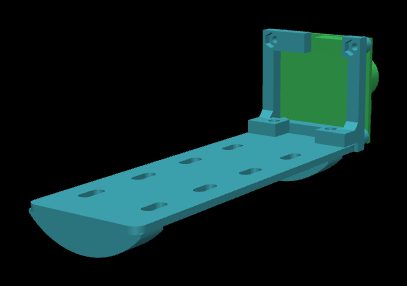
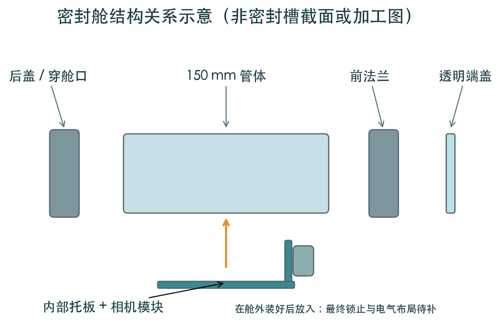
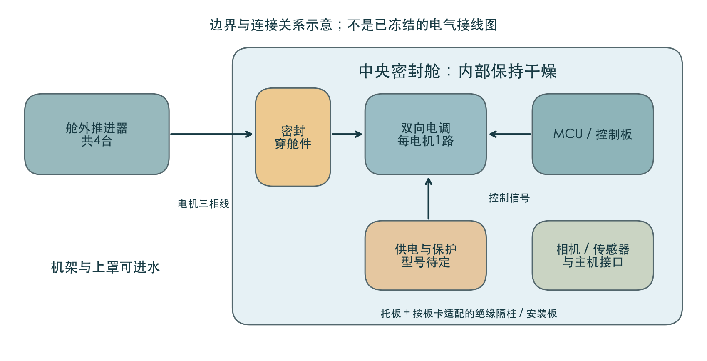
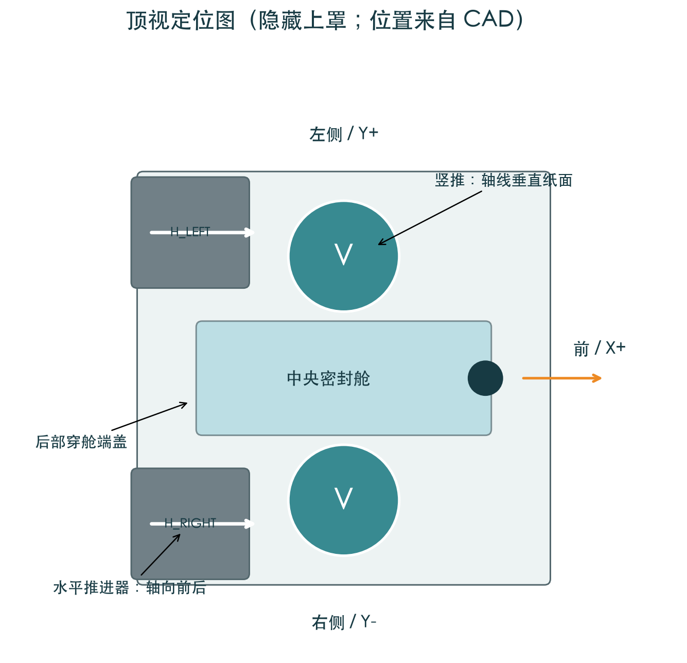

SimpleROV 图文组装说明
标准装配与选装附件。 PDF · 装配验收 · 实机路线
01 先认识整机
SimpleROV / 图文组装说明 / 2026-11-14

图1 现有CAD总装渲染。未画最终线束、穿舱接头、控制板、电调和电池。
本机是一台四推进器、中央干舱的机械试装原型，标准装配外包约213×210×148 mm，默认不装顶部浮材及绑带；加装浮力模块后约213×210×185 mm。两台水平推进器负责前进、后退和转向；左右两台竖直推进器负责升降并辅助保持左右水平。横移和俯仰没有独立执行器。
机架、上罩、滑橇和推进器在水中工作；中央商用密封舱内部保持干燥。上罩是保护外壳，不是防水盒。电机购买完整防水推进器，不打印桨叶，不自己做旋转轴穿舱。
状态：数字装配与网格检查通过；实物孔位、打印强度、湿态保持、水密和完整电气装配均未验证。本文不是潜深或可靠性认证。MCU专用安装板、托板机械锁止、穿舱线束及全部电气空间未冻结。
阅读顺序：第2页认零件；第3页分螺丝；第4-5页装底架和推进器；第6-8页装内部模块、舱体和线束；第9页封罩与选装浮力模块；第10页验收维护；第11页查文件和待确认项。
02 每个打印件做什么
10个主体打印件 / 7类功能件 / 另有2个接口试片

图2 实际打印件网格的分解示意。圆圈编号对应下表；位移仅供识别，不代表可直接按该方向抽出。
| 编号 / 文件前缀 |
数量 |
作用与位置 |
| 1 / V5_01_LOAD_CHASSIS |
1 |
承力底架。连接推进器、滑橇、舱座、上罩和系缆眼，预留选装浮材绑带通道；承受推进力。 |
| 2 / V5_02_UPPER_FAIRING |
1 |
橙色上罩。保护与整理外形，留进排水口、观察口和4个螺钉工具井；不能作提手或密封舱。 |
| 3 / V5_03_SKID_±97 |
2 |
左右滑橇。落地支承与保护底部；每侧两条立腿接底架。 |
| 4 / V5_04_POD_CLAMP_±50 |
2 |
前后两处舱压环。配软衬把密封管固定在底架舱座上；不是端盖密封件。 |
| 5 / V5_05_VERTICAL_CARRIER_±62 |
2 |
左右竖推支架。8mm主壁、双加强肋、每侧四点接底架；侧面安装竖直推进器。 |
| 6 / V5_06_MODULE_TRAY |
1 |
100×35mm内部托板。用于相机架和后续模块安装；MCU安装板与可靠锁止待补。 |
| 7 / V5_07_CAMERA_CARRIER |
1 |
相机架。固定32×32mm相机板、提供镜头与USB让位，再连接托板。 |
打印文件用mechanical/stl/，已按建议姿态落床，单位mm。mechanical/assembly_meshes/用于总装/仿真，不能混作已排好方向的打印文件。压力舱、相机和推进器另购；浮材与绑带是选装附件，默认不采购。
03 螺丝、垫片与工具
下表为当前CAD安装量，不含备件；电机螺钉需先核盲孔深度
| 规格 |
数量 |
分配位置 |
| M3×8 内六角圆柱头 |
8 |
两台水平电机，各4颗；试装目标啮合3mm。 |
| M3×12 内六角圆柱头 |
10 |
两台竖直电机各4颗；相机架与托板连接2颗。 |
| M3×16 内六角圆柱头 |
8 |
滑橇4颗；舱夹4颗。 |
| M3×20 内六角圆柱头 |
8 |
两个竖推支架与底架连接，各4颗。 |
| M3×25 内六角圆柱头 |
4 |
上罩与底架连接。 |
| M3六角螺母，AF5.5×厚2.4 |
22 |
滑橇4、舱夹4、竖推支架8、上罩4、相机架脚2。 |
| M3平垫，外径7/内径3.2/厚0.5 |
56 |
滑橇4；舱夹8；竖推支架16；电机16；上罩8；相机架脚4。 |
| M2×10 螺钉 |
10 |
相机4颗；原厂透明端盖6颗，优先随套件采购。 |
| M2螺母，AF4×厚1.6 |
4 |
相机架背部六角窝。 |
| M2平垫，外径5/内径2.2/厚0.3 |
4 |
仅相机板正面；不加到原厂透明端盖堆叠。 |
M3×12表示公称螺纹直径3mm、头下长度12mm；AF表示螺母对边宽度。M3紧固件按A4-70、M2按316不锈钢名义规格选购，原厂压力件紧固件服从厂家要求。可另备少量同规格备件，实际包装数量自行取整。
工具：适配螺钉头的长杆内六角、适配M3/M2螺母的扳手或套筒、卡尺、孔深量具、去毛刺工具、平整装配台、标签、匹配密封材料的清洁用品与原厂指定润滑脂。后续还需万用表、限流台架电源、真空测试工具和可回收浅水测试场地。
本版没有统一拧紧扭矩或防松工艺。不要用金属连接的经验扭矩硬压打印件或透明窗；防松剂与丙烯酸/塑料的兼容性、原厂允许范围必须确认。
04 第一步：底架、滑橇和竖推支架
先在干燥台面装机械骨架 / 全程不通电

图3 隐藏上罩、浮材与中央舱后的承力布局。电机为尺寸重建参考，不是打印件。
-
先用1台实物推进器核对H_mount_fit与V_mount_fit两个试片。确认四孔是否均为M3、14/8十字孔方向、孔深、底脚贴合和出线。通过前不要批量打印主体。H试片有效夹持加垫片约5mm，V试片加垫片约8.5mm。
-
打印主体后去除支撑、毛刺和残丝。建议PETG、0.2mm层高、至少6道壁，连接区充分实心；逐件检查分层、翘曲、堵孔和螺母窝。最大件210×210mm，先核打印机有效范围。先试穿螺钉，不用螺钉强拉翘曲零件。
-
底架平放，辨认前后：相机朝前，后部有专用系缆眼。+X向前、+Y向左、+Z向上；左右均按机器人面向前方定义。
-
滑橇放在底架两侧下方，Y=±97mm。每条滑橇的两个侧开口先放M3螺母；M3×16从底架上方向下穿入，头下各放1片M3垫片。两侧共4颗螺钉、4片垫片、4个螺母。先对齐再逐步紧固。
-
左右竖推支架位于Y=±62mm。每侧四孔对齐底架，M3×20从底部向上穿过支架法兰和底架，上下各1片M3垫片、上方M3螺母。两侧共8颗螺钉、16片垫片、8个螺母。加强肋朝后侧安装面，不侵入竖推水路。
检查：滑橇落地平稳，支架贴合，无需掰弯强装。滑橇上方工具路径会被水平推进器遮挡，所以必须先装滑橇。
05 第二步：四台推进器怎样固定
推进器在舱外浸水工作 / 桨、导流罩和电机购买成套

图4 安装层次与名义螺钉啮合示意。尺寸解释尚待实物验证。
-
水平推进器：两台轴线沿X，位于后部左右两侧，轴心(−78,±74,18)mm。原厂固定底脚贴合底架安装台；从底下用每台4颗M3×8和4片M3垫片向上固定。垫片落入底架预留沉台；不夹外转子、桨轴、桨叶或导流罩薄壁。
-
竖直推进器：左右轴心(0,±62,−40)mm，轴线沿Z。把原厂底脚贴在竖推支架安装侧面，每台4颗M3×12、4片M3垫片从支架背面沿X方向进入电机底脚。固定面和朝向以当前总装及图8顶视定位图核对。
-
每组优先配相反旋向的成品推进器，后续校准使水平同推能前进、竖直同推能上升。CW/CCW不是接线或推力正负的完整定义；必须在水中低推力逐台标定。每台需要独立双向电调。
-
理顺电机线，预留可拆卸余量，先用临时可释放束带固定在底架。任何位置都不允许电线接触桨、被上罩夹住或横跨进排水口。导线出线位置未建成原厂完整几何，必须实物核对。
放行条件：螺钉未触底、底脚贴合、推进器无松动、桨与周边无干涉。现有直径54mm贯通通道只是几何净空检查，不代表已验证水流效率。图中M3×8/12不应替代孔深实测。
06 第三步：相机、托板和MCU安装关系
相机架已经建模 / MCU专用安装板与托板正向锁止尚待设计

图5 当前相机与托板CAD局部。相机主机、MCU、四路电调及电池没有在此图中占位。
-
相机架背部4个六角窝各放1个M2螺母。相机板28×28mm孔距与支架四孔对齐，镜头朝前，每孔从相机正面放M2薄垫片，再装M2×10螺钉。共4颗螺钉、4片垫片、4个螺母；不得用螺钉把PCB压弯。
-
当前相机板绕镜头轴旋转180°，让USB接口进入上侧让位口；采集端相应旋转图像180°。实际USB插头/弯头尚未选定，必须核对插拔和弯线空间。
-
相机架脚与托板前端X=42、Y=±10mm的两个孔对齐，2颗M3×12从上向下，头下和下方各放垫片，再装M3螺母。共2颗螺钉、4片M3垫片、2个M3螺母。此模块先在舱外装好。
-
普通MCU/控制板保持干燥，先用绝缘隔柱固定在按该板孔位设计的小安装板上，再把安装板连接托板长圆孔；不是把裸板直接丢进舱里。托板预留8个8×3.4mm长孔，孔中心X=−40/−20/0/20、Y=±10mm。不要为固定板卡在压力管壁打孔。
-
当前托板两只弧形脚仅是配软垫的试装保持。必须增加并验证明确的轴向机械锁止，避免线束拉动、碰撞时模块滑动。锁止形式取决于最终舱组件和可用安装面，尚未建模，不能按已完成处理。
本步骤的停点：相机架可试装；最终MCU板、USB主机、电调、电池、连接器的1:1摆放及托板锁止未确认前，不封装整套带电电子设备。150mm舱长不代表必然全部装得下。
07 第四步：密封舱与舱夹
密封由商用舱组件承担 / 打印压环只负责固定外部管体

图6 密封舱组件分解示意：两端为端盖组件，中间为管体，下方为相机托板模块。未画O形圈、锁止绳和最终线束。
-
核对同一兼容系列的150mm管、前RAILS法兰、前透明端盖、后1M10+8M6法兰盖，以及全套O形圈、锁止件、堵头和穿舱件。当前参考CAD的外径58mm；不要只按“50mm”字样采购不兼容系列。
-
按原厂指南清洁并检查密封面、密封圈及锁止结构，使用厂家允许的润滑材料；锁止入口与管体缺口对准。前透明盖六孔按原厂堆叠，用6颗M2×0.4−10配套螺钉，不自行增加垫片。此处不是通用M3结构连接，不能套用其扭矩。
-
先在舱外完成托板模块装配和可拆线束，确认不会挤到密封面后放入。电子模块最终装舱应在全套空舱、接头和线束验漏合格后进行。频繁维护优先按原厂流程拆端盖总成，勿无必要反复拆透明窗本体。
-
两个下舱座各放一条约1mm厚、12mm宽的闭孔EPDM软衬，长度按实际圆周裁切，对接不搭层。名义径向空间约0.8mm，需要实测压缩与贴合；软衬不是密封圈。
-
管体放入前后舱座；底架两端侧槽接纳金属法兰外伸部，提供轴向限位。不要向透明端盖、密封槽或锁止入口施压，不强压端盖入槽。模型预留约0.6mm轴向余量，需实物确认。
-
两个上舱夹置于X=±50mm，对齐四个连接孔。4颗M3×16从上向下，头下及下方各1片M3垫片，再装M3螺母。共4颗螺钉、8片垫片、4个螺母。压环硬止挡贴合后停止继续挤压，不以压扁管体来防滑。
压力舱和穿舱件按原厂适配流程单独验漏。原厂真空指南示例为约15inHg、观察10-15分钟、下降不超过0.5inHg，须确认适用于所购完整组件与测试工具。先排除测试工具自身泄漏；真空通过不等于通过目标潜深耐压。
原厂来源：bluerobotics.com/learn/watertight-enclosure-wte-assembly-new/；bluerobotics.com/learn/using-the-vacuum-test-plug/。原厂流程与材料说明优先于本说明的示意。
08 第五步：线怎么进去，控制板怎么保持干燥
干湿边界图 / 不是已完成的电气原理图或线束生产图

图7 机架与电机在湿区；电调、控制器等按最终方案固定在干舱中。
-
每台无刷推进器的三相线接一路匹配双向电调，MCU向电调发送控制信号。电机不能直接接MCU引脚。电调、供电保护、稳压及具体信号协议未冻结，不按本示意直接焊线。
-
电机线经匹配的密封穿舱件进入后盖。必须先确认电缆是否有连续外护套、外径、材料和厂家允许的密封方式。三根散线/多股线束不能默认通过普通单孔压盖获得密封；必要时采购适配的原厂灌封线束。
-
已用端口装配匹配穿舱件，未用端口装配套堵头，所有密封面按厂家要求处理。后盖有1M10+8M6口只是接口容量，不代表任意接头可直接兼容或已经密封。不要把螺纹本身、扎带或外涂胶当作已验证的密封系统。
-
舱内线束留检修余量并应力释放，不能碰桨、锐边、密封面、锁止件或夹在端盖中。系缆承力连接到后部6mm专用眼位；该眼位尚无额定回收载荷，不让穿舱线承拉，不以相机USB线承拉。
-
关闭舱前，逐项确认电池/保护、控制器、四电调、稳压、USB主机、传感器、线头和插拔空间。相机是USB设备，需要适配USB主机接收图像；一般MCU的PWM输出不等于视频主机。
防水对象是整个舱体、接头和线束组合，普通MCU板只需在合格干舱内工作。当前完整电气堆叠、线束图、保护参数与空间还未完成；本页的逻辑连接不能替代这些工作。
09 第六步：上罩、选装浮力模块与配重
标准装配不装浮材和绑带 / 是否加装由实测配平决定

图8 顶视辨认前后与左右。水平方向箭头表示正向受力约定，不是水流箭头。
-
上罩浅定位沿与底架对齐落座。四个工具井对应X=±95、Y=±18mm连接点；4颗M3×25从上方经工具井装入，头下和底架下方各1片M3垫片，下面装M3螺母。共4颗螺钉、8片垫片、4个螺母。线束不可夹在定位沿内，上罩不作为密封面。
-
选装浮材时，前后各放1块名义62×160×35mm闭孔浮材，中心X=±69mm、底面Z=60.5mm。材料需适合目标水深，按真实密度选，不用普通FDM空心块或吸水泡棉替代。工具让位口总计4处、名义D12，先确认不遮挡螺钉井。
-
仅随浮材选装4条可释放绑带按纵向X绕浮材和承力底架，Y=±32.5mm。后段经过X=−101/−35导向槽，前段经过X=35/101导向槽；槽宽3×7mm。名义带宽4.8mm、厚不超过1.2mm、长约450mm；实际锁头未建模，放在可达顶部、远离工具井和桨水路。
-
标准装配跳过26-27。完整装配并称重、测排水和水中姿态后，按需加浮材或通过底部两条12×3.4mm长圆孔固定配重。调整浮材和配重使浮心高于重心、前后平衡，并在完全浸没时略正浮。不要把仿真的1.4kg和1%正浮力作为实测结果。
10 装好以后怎样检查、拆卸和维护
先干装与空舱验证，再进行可回收浅水低功率试验
| 关卡 |
检查内容 |
尚未通过时 |
| 干装 |
每个螺钉/螺母可达；推进器、舱体、相机和托板不松动；线不碰桨，定位沿不夹线。 |
停止封装，修正干涉、孔深、保持和线束。 |
| 结构加载 |
按装配验收文件对真实打印件、支架、舱夹和系缆眼做载荷与湿态保持测试。 |
数字检查不能代替承载证据；不赋予额定载荷。 |
| 空舱验漏 |
真实穿舱件、堵头、线束安装后，按原厂流程验漏；改变接头/密封后重测。 |
不装带电电子设备下水。 |
| 无动力配平 |
用最终质量的假负载，测完全浸没状态、断推姿态、前后平衡与净浮力。 |
调浮材/配重；控制器不承担机械配平缺陷。 |
| 动力浅水 |
可回收、受控场地，逐台低推力确认方向，验证失联停推、升降、转向和定深。 |
保持低功率，不扩大深度、持续时间或电流。 |
结构验收文件暂拟每个电机安装模块约41N双向静载、保持5分钟、重复3次，是项目拟定工况，尚未执行，也不是认证标准。用刚性替身夹具加载，不损伤推进器本体；位移不能侵入实际最小间隙，检查裂纹、分层、滑移与残余变形。完整底架的同时推进工况和实际材料性能仍需另核。
拆罩顺序：断电并确认桨不会启动 → 若装有浮材，先释放绑带并移开浮材 → 经4个工具井拆上罩 → 释放舱夹 → 按原厂流程取舱检修。拆滑橇前，还需取下挡住上方工具路径的水平推进器。竖推电机的侧向螺钉可独立维护。
使用后检查漏水、线缆磨损、穿舱件松动、打印层间裂纹和螺母槽。维护密封圈或更换穿舱件后重新验漏。任何发生过触底、撞击、过热或进水的部件重新评估，不能只复位继续运行。
不能据此承诺满功率长期工作、额定潜深或使用寿命。当前需要完成的仍包括托板机械锁止、电气空间/散热、穿舱线束、电机原厂接口实测和全部物理测试。
11 文件、未完成项与装配记录
让打印件、采购件和实际样机保持同一版本
| 要找什么 |
文件入口 |
| 10个主体打印文件 |
mechanical/stl/；名称对应第2页。 |
| 2个电机试片 |
mechanical/fit_coupons/H_mount_fit.stl；V_mount_fit.stl。 |
| 可编辑结构 |
mechanical/step_parts/；参数化源mechanical/build.py与parameters.json。 |
| 带参考件总装 |
mechanical/assemblies/simple-rov.step为默认无浮材总装；同目录含with-fasteners及with-buoyancy配置。 |
| 打印和紧固件清单 |
bom/PRINT_MANIFEST.csv；BOM_FASTENERS.csv；FASTENER_INSTANCES.csv。 |
| 采购件/孔位 |
bom/BOM_PURCHASED.csv；KEY_HOLES.csv；INTERFACES.json。 |
| 实机推进与记录 |
docs/build-plan.html；bom/component-confirmation.csv；docs/acceptance.html。 |
| 仿真和已做检查 |
docs/simulation.html；simulation/mujoco/；mechanical/GEOMETRY_CHECKS.json、EXPORT_CHECKS.json。 |
必须补完：①电机原厂孔型/孔深/出线；②具体控制板及安装板；③托板可靠锁止；④电池、四电调、USB主机和线束空间及散热；⑤实际穿舱件/堵头；⑥整机称重、浮心重心、推力标定；⑦打印载荷、湿态保持、水密和浅水试验。
记录建议：样机编号、打印材料批次、层高/方向/壁数、螺丝规格及实际啮合、采购件版本、实际重量、电机推力方向/中位/电流、验漏日期/结果、载荷试验、断推姿态与检修记录。不同批次打印件不能直接沿用上一批的强度结论。
历史Onshape参考中10个主体为可直接编辑的导入实体，没有原生草图历史；完整尺寸驱动源是Python。云端后端盖导入为曲面参考，本地原厂STEP仍为实体；不要用云端曲面参考制造承压件。云端历史总装含浮材，不作为当前默认配置；以本仓库assemblies为准。修改后须统一更新CAD、孔位清单、文档及仿真。
来源：X2官方产品页与尺寸图；Blue Robotics原厂压力舱/相机STEP；原厂装配与真空验漏指南。电机参考网格和示意图不替代厂家安装图。原厂装配：www.bluerobotics.com/learn/watertight-enclosure-wte-assembly-new/；真空验漏：bluerobotics.com/learn/using-the-vacuum-test-plug/；电机：underwaterthruster.com（APISQUEEN X2产品页）。
下一步实际执行：先做1台电机＋2个接口试片，同时完成电气1:1堆叠；通过后再批量打印主体和补购电机。不要把“有STL和螺丝表”当作完整成熟整机已定版。
原厂资料
压力舱装配指南 · 真空验漏指南